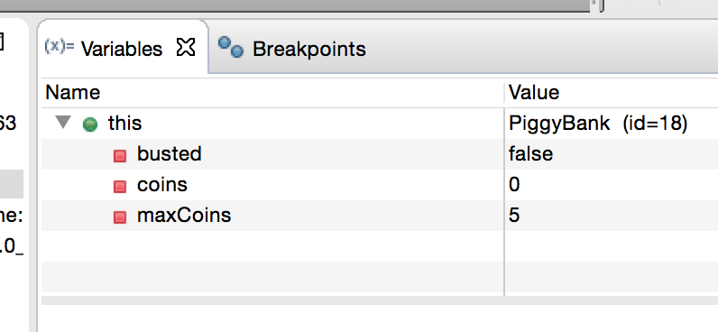

Objects and instance variables
Add the following files to your projectPiggyBank.java
PiggyBankExample.java
Read the javadoc comment at the top of PiggyBank.java to see how it is supposed to work.
If you run the main method of PiggyBankExample, you can see that the results are not quite right.
- Set a breakpoint at the first line of
mainand run in Debug mode. - Use Step Over or F6 to execute the first line, and take a look at the Variables pane again. You see the parameter
argsand also the local variablepiggy. - Since
piggyis an object, all we initially see for its value is the name of the class. But when you hover the cursor over that line of the table, a small triangle appears on the left. Click the triangle to expand. Now you can see the values of the three instance variables in the object. - The green highlight should now be over the call to
addCoin. - Use Step Into or F5 to enter the
addCoinmethod. Notice that the Variables pane doesn't have any local variables, since there aren't any, but it includes something calledthis. The implicit variablethisalways refers to the object on which the executing method was invoked (here it is thePiggyBankwe created inmain). - Hover over the
thisline of the Variables pane; again the little triangle appears so you can expand and see the instance variables.
- Now use Step Over or F6 twice, so that you execute the line
coins += 1. You can see the instance variablecoinsupdated in the Variables pane. - Step again to return to main.
- Step over (F6) the next line in
main(another call toaddCoin()). - The next line of main is a
printlnstatement. The line actually contains two method calls, one toprintln(), and one togetNumCoins(). If we press Step Into again, which one do we go into? In this case, the runtime has to evaluate the argument toprintlnbefore it can executeprintln, so the debugger will step into thegetNumCoins()method first. Try it, and continue stepping until you get back to main.- Remember, if you accidentally step
into any Java library code, such as the
printlnmethod, you can use Step Return or F7 to get back.
- Remember, if you accidentally step
into any Java library code, such as the
- When you get to the next line in
main, step into theisSmashed()method. Keep an eye on the instance variables, and identify the error! - Terminate the program, fix the error, and check that the results are correct now.
Checkpoint 2
Demonstrate to the TA that you can set breakpoints, single step through code, step return from a method such asprintln and view instance variables of objects. Explain the error you found in PiggyBank.